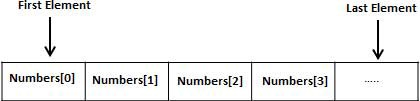
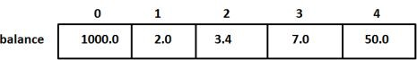
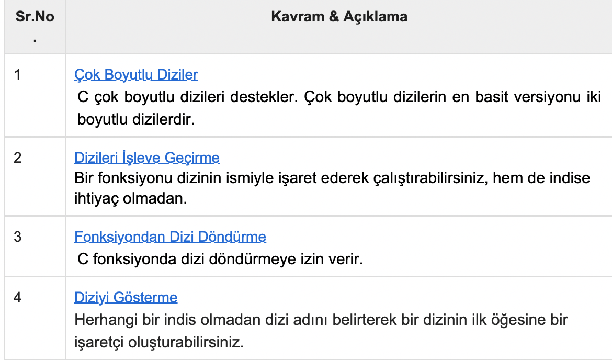

C Öğreticisi 12 (Diziler)
Bu yazılar https://www.tutorialspoint.com/cprogramming/ adresindeki yazı dizilerinin çevirileridir.
Diziler, aynı türden sabit boyutlu sıralı bir eleman koleksiyonunu saklayabilen veri yapısı türüdür. Bir dizi, genellikle bir veri koleksiyonunu depolamak için kullanılır, ancak bir diziyi aynı türdeki değişkenler koleksiyonu olarak düşünmek daha yararlıdır.
Değişkenleri tek tek tanımlamak yerine, numara0, numara1,…, numara99 şeklinde tanımlanır. Dizilerde bir elemana indis ile erişilir.
Tüm diziler birbirini takip eden bellek konumlarında oluşur. En düşük adres ilk öğeye, en yüksek adres ise son öğeye karşılık gelir.
Dizilerin Bildirilimi
C’de bir dizi bildirmek için, bir programcı öğelerin türünü ve bir dizinin gerektirdiği öğe sayısını aşağıdaki gibi belirtir -
tip diziAdı [diziBoyutu];
Bu tek boyutlu dizi olarak adlandırılır. diziBoyutu mutlaka sıfırdan büyük bir tamsayı sabiti olmalıdır. Örneğin, 10 elemanlı “double” tipinde “dizi” isimli bir dizi tanımlamak istersek şunu kullanırız -
double dizi[10];
Dizi, 10 tane double tipli numarayı tutan dizi elemanı olmak için yeterlidir.
Dizileri Başlatma
C’deki bir diziyi tek tek veya aşağıdaki gibi tek bir deyim kullanarak başlatabilirsiniz -
double dizi[5] = {1000.0, 2.0, 3.4, 7.0, 50.0};
Parantez {} arasındaki eleman sayısı, köşeli ayraçlar [] arasındaki dizi için bildirdiğimiz öğe sayısından daha büyük olamaz.
Dizinin boyutunu atlarsanız, başlatmayı kaldıracak kadar büyük bir dizi oluşturulur. Bu nedenle, şöyle yazarsanız -
double dizi[] = {1000.0, 2.0, 3.4, 7.0, 50.0};
Önceki örnekte yaptığınız dizinin aynısını oluşturacaksınız. Aşağıda, dizinin tek bir öğesini atamak için bir örnek verilmiştir -/p>
dizi[4] = 50.0;
Yukarıdaki kod dizinin 5.elemanının değerinin 50.0 olduğunu gösterir. Tüm dizilerin ilk öğelerinin indisi temel indis olarak da adlandırılan 0’dır. Bir dizinin son indisi toplam boyutun bir eksiği olacaktır. Aşağıda, yukarıda tartıştığımız dizinin resimsel temsili vardır:
Dizi Elemanlarına Erişim
Elemanlara erişim dizi adı ve indis ile olur. İndisi dizi adının sağına iki köşeli parantezin içine yazarız. Örneğin -
double maaş = dizi[9];
Bu kod bizi dizinin 10.elemanına götürür, Aşağıdaki kod, bildirim, atama ve dizilere erişme’yi gösterir -
#include
int main () {
int n[ 10 ]; /* n 10 tamsayılı bir dizi */
int i,j;
/* diziyi 0’dan 10’a başlatma */
for ( i = 0; i < 10; i++ ) {
n[ i ] = i + 100; /* eleman yerini i’den i+100’e yap */
}
/* her dizi öğesinin değerini bastırır */
for (j = 0; j < 10; j++ ) {
printf(“Eleman[%d] = %d\n”, j, n[j] );
}
return 0;
}
Yukarıdaki kod derlenip çalıştırıldığında takip eden sonucu gösterir -
Eleman[0] = 100
Eleman[1] = 101
Eleman[2] = 102
Eleman[3] = 103
Eleman[4] = 104
Eleman[5] = 105
Eleman[6] = 106
Eleman[7] = 107
Eleman[8] = 108
Eleman[9] = 109
Detaylıca Diziler
Diziler C için önemlidir ve daha fazla dikkat gerektirir. Dizi ile ilgili aşağıdaki önemli kavramlar bir C programcısı için anlaşılır olmalıdır -
 https://www.tutorialspoint.com/cprogramming/c_arrays.htm